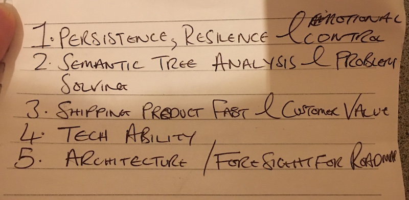

The title of this post should really be: "How to become a senior developer, from somebody who is one, relayed to you by somebody who isn't one"!
I recently sat down with my employer Circular Wave's co-founder and CTO Ashley Rudland, for my end-of-first-year-as-a-developer catch up meeting. Amongst a whole ton of stuff one of the main topics we discussed was, what would be required for me to progress from where I currently am, a junior developer with one year's professional experience, all the way to being a senior developer. Ash is well suited to address this topic, having something like sixteen years of professional development experience under his belt.
After a discussion around what I personally thought would be the most important skills for a senior developer to posses, Ash wrote down his own well-considered thoughts around this, neatly separated out into 5 bullet points, and interestingly listed in order of priority. Seeing Ash's list was eye-opening for me, specifically I was surprised at how he'd prioritised the list. As Ash explains it, some of the skills we discussed will naturally come with experience, so generally aren't possessed by too many junior developers. However by surrounding yourself with more experienced developers these skills can be acquired earlier than experience would usually allow for.
With Ash's go-ahead I've gone into detail below on his list of the five most important skills required of a senior developer, in order (from most important to least).
Persistence, resilience & emotional control
This is the most important skill that a senior developer should posses. A good senior developer shouldn't get flustered by, or frustrated with their work. While a junior developer might reach a point of frustration with a task where they simply give up any hope of solving the problem themselves and ask for help, a senior developer should always have the confidence in their abilities, the resilience of attitude and the perseverance to keep hacking away at the problem, until eventually it will get resolved. Even in the face of major adversity, a senior developer will find a way to get the job done. They know that they'll crack the problem eventually, no matter how difficult, so why get stressed in the process?
Semantic tree analysis & problem solving
While Ash is one of the best problem solvers I know, he'll be the first person to admit that this isn't due to a natural talent or inherent ability, it's due to his structured and well-considered approach to problem solving. As he explains it, the human brain has an incredible amount of potential to consider and solve complex problems, but it also draws its roots in an evolutionary history which has left it not only incredibly capable, but also incredibly flawed, easily overwhelmed and liable to approach problems in incorrect and ineffective ways. Without a clear framework laid out to help tackle complex problems, the pressure of cognitive load can lead to the human brain's tendencies to fall back on its less effective traits taking hold, derailing any attempts at productive problem solving.
Essentially, once you can exercise the ability to remain calm under pressure as described in the previous section, you also need a system to help rationalise problems to overcome your brain's natural limitations. Many developers, even experienced developers may never consider their own approach to problem solving, leaving it in a largely unaltered state throughout their careers. While honing your mind can be a slow process taking potentially years to improve substantially, with practice you can reach an almost unconscious level of competency, whereby your problem solving abilities can be sped up dramatically, by as much as a 10x to 30x improvement in Ash's estimations. Mastering this ability can push you into the top 1% of developers.
Semantic tree analysis is the art of continually stepping backward from a problem, to a higher level of encapsulation. When looking at a piece of buggy code for example, a good senior developer won't dwell on that line of code, but will instead step backwards, to consider the issue from further back. What is this code, what is it trying to do? Can we use something else entirely? This will oftentimes lead to several other backward steps, each reframing the problem as a smaller component part of a larger 'tree' of parts.
Continually stepping back from the nuts-and-bolts of the issue in this way leads to viewing the issue not in isolation, but from a much wider point of view which reframes the problem in new ways, which may make solving that problem seem suddenly trivial. It may suggest fixes which would have been difficult to consider when only looking at the lower-level code implementation.
Shipping product fast & customer value
I liken this skill to having the ability to remove yourself from the current situation, from deep within the coding trenches, and view it from 10,000 feet above instead.
There have been times where I've personally been handed a task to complete, and that task has eventually proven to be much more difficult to complete than anybody had accounted for, due to one of a whole host of reasons. As a junior developer, my mind has naturally moved toward 'how can I get this working exactly as specified?'. I've wanted to complete the tasks that I've been given in exactly the way that they've been specified, because anything less feels like giving up, or asking for help with something that I should be capable of doing myself. Several times Ash has eventually gotten involved once it's become clear that I've been having difficulties, or that the time estimate has started running too far over. Many of these times, while I've been deep in the code, surrounded by broken functionality that I'm trying hard to fix, Ash would say something like: "Okay this has turned out to be much more complicated than we thought it would be, why don't we try this instead. It's a different solution, but will be just as useful from the customer's point of view".
What I'm referring to here is the senior developer's ability to view things from a different perspective, and ask themselves what the customer actually wants or needs, and how can we quickly get an approximation of that to them. It's asking the big questions, not just 'how can we build this feature as specified', but 'should we be building this feature at all? Is there a simpler way to produce a broadly similar result for the end user?', that will save a lot of time and money.
Tech ability
I was very surprised at how low tech ability rates in this list, because I gave it the number 1 spot in my own estimates. From my perspective as a junior developer, one key skill that a senior developer should absolutely possess is a very high level of technical ability. To my mind a senior developer would rely very little on documentation, because all of their years of experience should have filled their memories with enough real world examples that they just 'know' how to do things.
While this is true to a certain extent, Ash actually lists it as one of the lower priority skills, because a senior developer should just be able to pick up technical abilities when needed. Once a certain base level of capability is reached, a senior developer should just be able to pick up anything else they need to know along the way, whether it's slightly familiar or a new concept entirely. Senior developers don't need to have all of the answers in their head, they just need to be good at finding the right answers when they need to, and executing quickly and efficiently on those answers.
Architecture / Foresight for roadmap
A senior developer should always be keeping one eye on the underlying architecture of their product. There are usually ways of speeding up, simplifying or optimising the architecture that are available, and these methods can often provide a far larger benefit than simply trying to optimise the existing code.
A junior developer will try to write code that works. A mid-level developer will try to write code that works and is well optimised. A good senior developer might write the same code as the junior developer, and then focus instead on looking at ways of hosting their product in a more optimal environment, and delivering it to the end user is the most optimised way possible. Optimising code can have a big impact for the better, but getting the architecture right can have an exponentially larger effect.
Foresight for roadmap means essentially keeping an eye on the future requirements of your product. Don't simply build something in a certain way because it works for the current task, instead consider the tasks that you'll also be working on in the coming months and years ahead, and make sure that your current tasks are designed and built in such a way to work with, or at least to not limit those future plans. A senior developer should instinctively be thinking about the future, rather than only looking at their short term tasks.
Conclusion
As discussed already, some of these skills will naturally come with experience while others can be hacked earlier than experience would usually allow. The key for me however is that now I'm aware of these skills I can keep them in mind, and consider them throughout every task that I'm a part of. This will not only benefit those tasks, but my own personal development too.